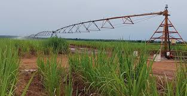

Les Plantations de Canne à Sucre SN SOSUCO
Description
Les Plantations de Canne à Sucre SN SOSUCO sont un site industriel majeur situé à environ 15 km au sud-ouest de Banfora. C'est une entreprise sucrière moderne qui produit du sucre à partir de la canne à sucre cultivée dans la région. Le site comprend des champs de canne à sucre, une usine de transformation et des installations de production.
Les visiteurs peuvent découvrir le processus de production du sucre, visiter les champs de canne à sucre et apprendre sur l'industrie sucrière locale. Le site est particulièrement impressionnant pendant la saison de récolte, lorsque les champs de canne à sucre sont au sommet de leur splendeur.
Importance Économique et Culturelle
Les Plantations de Canne à Sucre SN SOSUCO sont une entreprise majeure de la région des Cascades du Burkina Faso. Elles jouent un rôle crucial dans l'économie locale, fournissant des emplois et stimulant le développement économique. Le site est également un lieu important pour la communauté locale, qui y pratique des activités agricoles traditionnelles et modernes.
Depuis les années 1970, le site est devenu une destination touristique importante, attirant des visiteurs du monde entier intéressés par l'industrie sucrière et l'agriculture moderne. Des efforts de préservation sont en cours pour protéger ce patrimoine industriel unique et maintenir l'équilibre entre le tourisme et la protection de l'environnement.
Informations Pratiques pour la Visite
- Localisation : À environ 15 km au sud-ouest de Banfora.
- Activités : Visite des champs de canne à sucre, découverte du processus de production du sucre, photographie, découverte des traditions locales liées au site.
- Meilleure période pour visiter : Pendant la saison de récolte, lorsque les champs de canne à sucre sont au sommet de leur splendeur.
- Équipement conseillé : Chaussures de marche antidérapantes, vêtements qui ne craignent pas d'être salis, éventuellement un chapeau. Eau.
- Conseils : La visite du site doit impérativement se faire avec un guide local expérimenté qui connaît les lieux. Renseignez-vous sur les éventuelles restrictions ou permissions nécessaires.

{kind=link}
{kind=link}